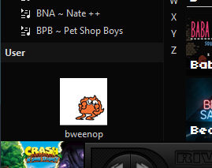

Rating & Evaluating Music Listening Methods
Spotify is... popular. And practical. And wrapped is a good marketing gimmick. Those are about the only nice things I can say about it, so, on to the negatives. You don't get to keep your music, they barely pay artists, not only do they incorporate AI directly into the product but they also hosted at least one AI band knock-off of an artist that intentionally removed their work from the platform, They were letting artists sell NFTs for a while, They were running ads for America's Racisim Police ICE, They donated to Trump's Inauguration apparantly (didn't know that one, thanks wikipedia), and their CEO gives money to a defence company that manufactures military drones. But, you know, it's popular, so people use it.
Musicolet was my android app of choice for listening to my MP3 library, back when I needed one of those. It had all the features I wanted: It synced my playlists, it had some color and interface theming options, no ads, and it was very customizable (letting you remove options from the menu if you don't want them, very cool). It's also got tag editing if you do that on your phone.
Switching to MP3 also nessecitated a program for PC listening as well, and here I picked up Musicbee. This is a nice piece of software. Relentlessly customizable, external plugin and theme support, automatic playlist export for syncing to other devices... Musicbee is one of the three tentpoles of my musical life. Also I get a little spot I can use to display an animated GIF!


Aahh.. my baby. I love this thing. All it does is play music (and some video) and damn does it do it good. It's small, it's battery is crazy, it's got buttons that click so that you don't have to look at it to skip songs or increase volume if you're on the go... I should mention, I'm using the custom firmware 'Rockbox' for this. It greatly expands the feature set from the base software, adding custom theme support, quick menus, playlist syncing, etc. This thing is my soul.
Using tech that's almost as old as you are does have it's downsides. Namely, this thing breaks. And while it's not so hard to get into and parts are available, it can be pretty finnicky.
We're getting into the outskirts a little now, and to be honest I haven't had the chance to use this much yet but.. it's cool right! Isn't it awesome! Takes regular old batterys and a big ol disc.

LOOK AT THIS THING! Look at it's dials and buttons! It's VFD displays! You can't see it but it came in one of this old hifi cabinets from, like, the 70s or something. You can't hear it either but it it's buttons are.. so clicky.